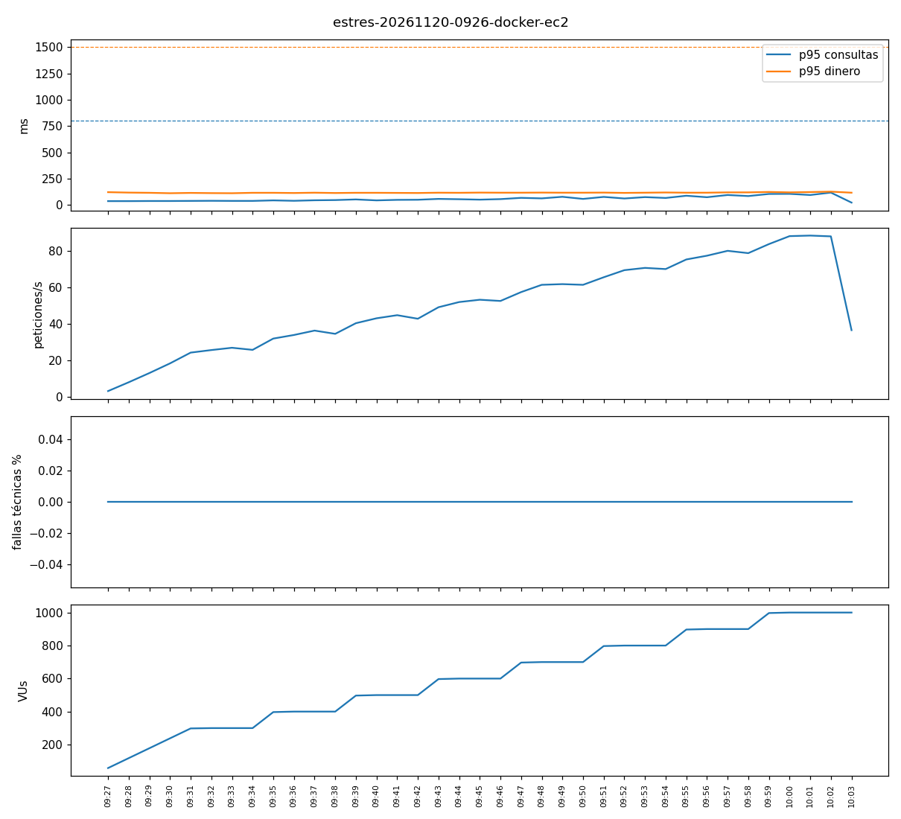
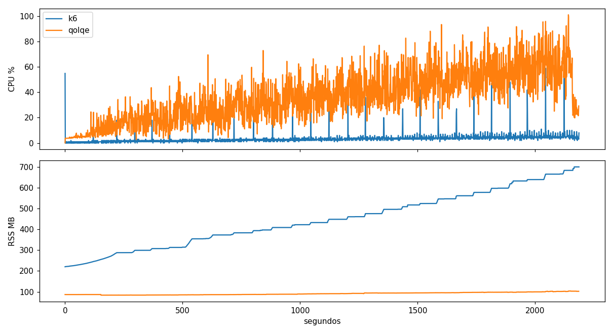

Estrés · 20/11/2026 09:26
AWS EC2 c7i.large (Qolqe en el núcleo 1, k6 en el 0) · carpeta estres-20261120-0926-docker-ec2
Validación en EC2 (informe §4.7): sin quiebre hasta 1 000 usuarios.
✓ Todos los umbrales cumplidosPeticiones HTTP
112 387
51,3 por segundo en promedio
Fallas HTTP
0
0,00 % de las peticiones
Iteraciones (sesiones)
11 391
5,20 por segundo
Usuarios virtuales máx.
1 000
Duración
36 min
2190 s
CPU de Qolqe
36 %
máx. 101 % · memoria máx. 104 MB
CPU del generador (k6)
3,4 %
máx. 59 %
Integridad de los datos
INTEGRIDAD OK
Operaciones de dinero confirmadas a k6: 18789; filas nuevas: 18789
Umbrales (criterios de aceptación)
| Métrica | Condición | Medido | Resultado |
|---|---|---|---|
errores_negocio | count<1 | 0 | ✓ cumplido |
http_req_duration{tipo:consulta} | p(95)<800 | 70,0 ms | ✓ cumplido |
http_req_duration{tipo:dinero} | p(95)<1500 | 117,9 ms | ✓ cumplido |
http_req_failed | rate<0.10 | 0,00 % | ✓ cumplido |
Latencia
| Medida | Promedio | Mediana | p90 | p95 | p99 | Máx. |
|---|---|---|---|---|---|---|
| Todas las peticiones | 20,2 ms | 3,6 ms | 69,5 ms | 98,0 ms | 138,2 ms | 1,58 s |
| Consultas (tipo consulta) | 15,2 ms | 3,1 ms | 42,5 ms | 70,0 ms | 144,7 ms | 1,58 s |
| Operaciones de dinero (tipo dinero) | 45,3 ms | 34,5 ms | 109,7 ms | 117,9 ms | 129,1 ms | 598,0 ms |
| Sesión completa (iteración) | 108,15 s | 108,23 s | 117,79 s | 120,47 s | 125,34 s | 135,53 s |
El dashboard de k6 solo muestra la fila «Todas las peticiones»; el corte por tipo sale de las etiquetas que pone qolqe.js.
Por endpoint
| Endpoint | Peticiones | p95 | Máx. |
|---|---|---|---|
GET /api/cuentas/me/saldo | 21 896 | 10 ms | 171 ms |
GET /api/cuentas/me | 21 896 | 10 ms | 171 ms |
GET /api/contactos | 15 600 | 11 ms | 181 ms |
POST /api/auth/login | 12 097 | 164 ms | 1579 ms |
GET /api/movimientos | 10 925 | 71 ms | 317 ms |
POST /api/transferencias | 9 281 | 122 ms | 598 ms |
POST /api/recargas | 5 878 | 15 ms | 267 ms |
GET /api/servicios/deudas | 3 682 | 11 ms | 142 ms |
POST /api/servicios/pagos | 3 630 | 14 ms | 511 ms |
GET /api/solicitudes | 1 525 | 10 ms | 116 ms |
GET /api/limites/alertas | 1 525 | 10 ms | 110 ms |
GET /api/seguridad/sesiones | 1 491 | 11 ms | 110 ms |
GET /api/seguridad/dispositivos | 1 482 | 10 ms | 94 ms |
GET /api/limites | 1 479 | 11 ms | 160 ms |
Por minuto
37 minutos (usuarios, peticiones por segundo, p95 en ms, % de fallas)
| Minuto | Usuarios | Req/s | p95 consulta | p95 dinero | Fallas % |
|---|---|---|---|---|---|
| 09:27 | 58 | 3.03 | 37 | 122 | 0.0 |
| 09:28 | 118 | 7.87 | 37 | 118 | 0.0 |
| 09:29 | 178 | 12.93 | 38 | 116 | 0.0 |
| 09:30 | 238 | 18.25 | 38 | 112 | 0.0 |
| 09:31 | 298 | 24.17 | 39 | 115 | 0.0 |
| 09:32 | 300 | 25.57 | 40 | 113 | 0.0 |
| 09:33 | 300 | 26.83 | 39 | 112 | 0.0 |
| 09:34 | 300 | 25.68 | 39 | 116 | 0.0 |
| 09:35 | 397 | 31.88 | 44 | 116 | 0.0 |
| 09:36 | 400 | 33.85 | 40 | 114 | 0.0 |
| 09:37 | 400 | 36.27 | 45 | 117 | 0.0 |
| 09:38 | 400 | 34.48 | 47 | 114 | 0.0 |
| 09:39 | 497 | 40.33 | 53 | 116 | 0.0 |
| 09:40 | 500 | 43.03 | 44 | 116 | 0.0 |
| 09:41 | 500 | 44.73 | 49 | 115 | 0.0 |
| 09:42 | 500 | 42.78 | 50 | 114 | 0.0 |
| 09:43 | 597 | 49.1 | 58 | 117 | 0.0 |
| 09:44 | 600 | 51.95 | 55 | 116 | 0.0 |
| 09:45 | 600 | 53.22 | 51 | 118 | 0.0 |
| 09:46 | 600 | 52.55 | 56 | 117 | 0.0 |
| 09:47 | 697 | 57.42 | 68 | 117 | 0.0 |
| 09:48 | 700 | 61.42 | 63 | 118 | 0.0 |
| 09:49 | 700 | 61.8 | 78 | 117 | 0.0 |
| 09:50 | 700 | 61.42 | 58 | 117 | 0.0 |
| 09:51 | 797 | 65.57 | 77 | 118 | 0.0 |
| 09:52 | 800 | 69.47 | 62 | 115 | 0.0 |
| 09:53 | 800 | 70.72 | 75 | 117 | 0.0 |
| 09:54 | 800 | 70.08 | 67 | 119 | 0.0 |
| 09:55 | 897 | 75.35 | 88 | 117 | 0.0 |
| 09:56 | 900 | 77.42 | 74 | 117 | 0.0 |
| 09:57 | 900 | 80.1 | 95 | 120 | 0.0 |
| 09:58 | 900 | 78.83 | 85 | 120 | 0.0 |
| 09:59 | 997 | 83.8 | 105 | 124 | 0.0 |
| 10:00 | 1000 | 88.18 | 106 | 120 | 0.0 |
| 10:01 | 1000 | 88.48 | 95 | 123 | 0.0 |
| 10:02 | 1000 | 88.05 | 118 | 127 | 0.0 |
| 10:03 | 1000 | 36.5 | 23 | 117 | 0.0 |
Gráficos


Archivos de la corrida
dashboard.html · k6.txt · summary.json · por-minuto.csv · por-endpoint.csv · integridad.txt
Datos de k6 (summary.json, k6.json.gz), de monitor.py (recursos) y de la verificación de integridad. Generado por resumen.py.